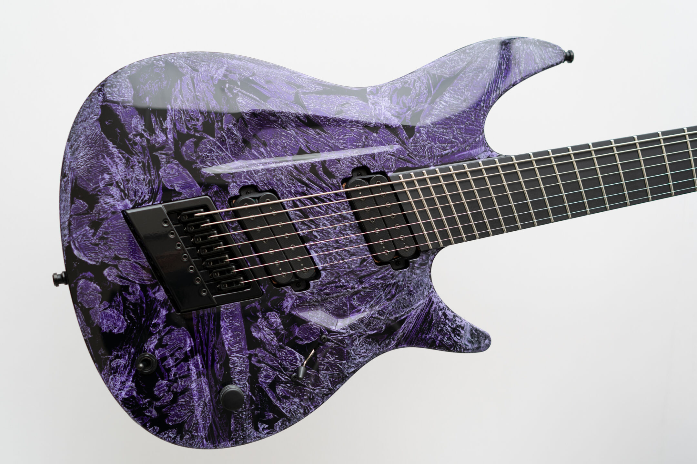
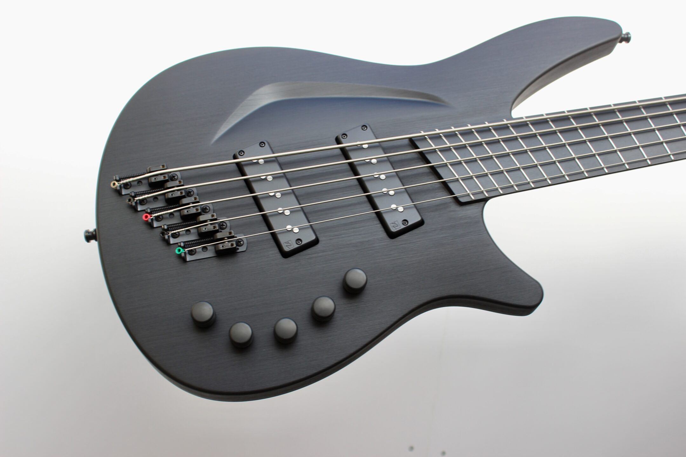
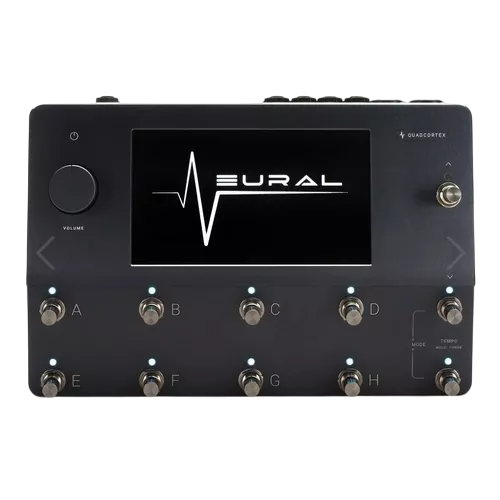
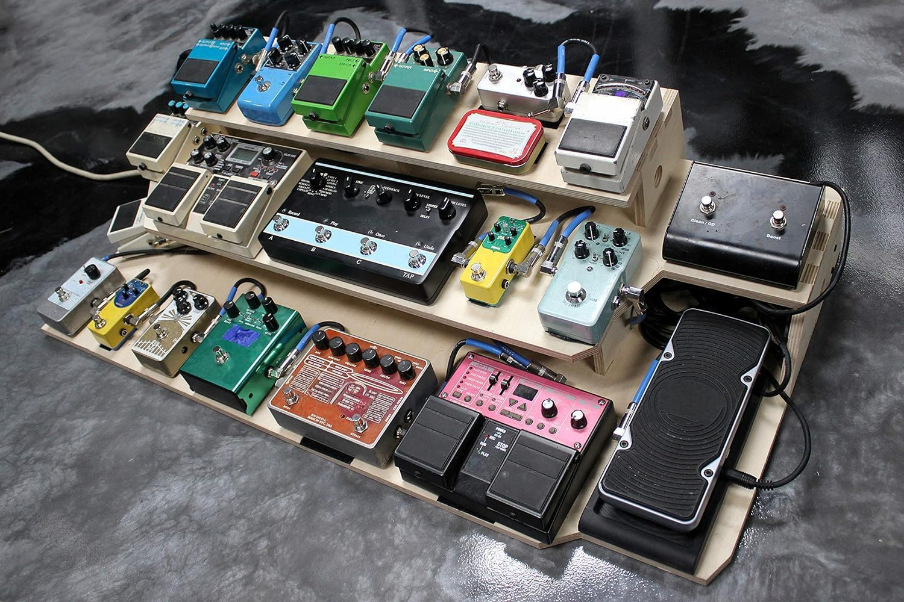
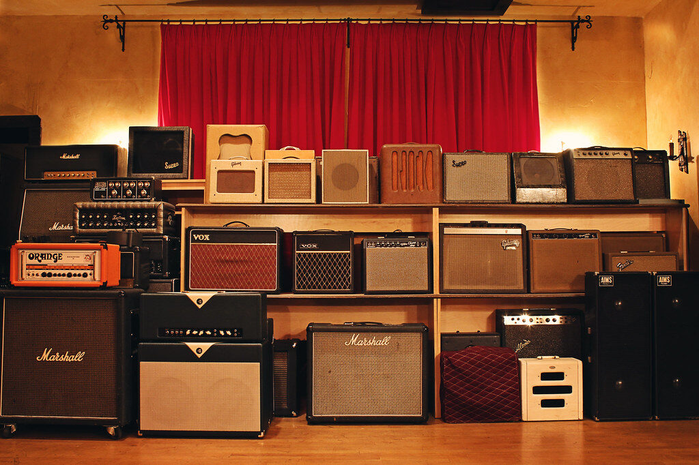

Home
Produtos
Ajuda
Quem somos
Encomendar
Nossos produtos

QUAIS GUITARRAS A DRAVEN TE OFERECE?
Trabalhamos com marcas renomadas que oferecem inovação e qualidade excepcionais. A Mayones se destaca pela construção impecável e timbre equilibrado, enquanto a Ruf Guitars aposta em designs ergonômicos e madeiras exóticas.A Aristides revoluciona com o material Arium, proporcionando sustain e estabilidade inigualáveis. Já a Strandberg se diferencia pelo design headless, escalas multiscale e conforto extremo. Cada uma dessas marcas entrega um nível único de excelência para músicos exigentes.
Se você sonha em ter uma guitarra única, feita para se destacar tanto em timbre quanto em design, a Draven Guitars é o seu destino. Entre em contato e comece a criar seu instrumento dos sonhos hoje mesmo!
Encomende Já
QUAIS BAIXOS A DRAVEN TE OFERECE?
Trabalhamos com marcas renomadas que oferecem inovação e qualidade excepcionais. A Mayones se destaca pela construção impecável e timbre equilibrado, sendo ideal para baixistas que buscam precisão e definição. A Aristides, por sua vez, revoluciona com o material Arium, proporcionando sustain e estabilidade inigualáveis, garantindo um som robusto e marcante. Ambas as marcas entregam um nível único de excelência para músicos exigentes.
Se você sonha em ter um baixo único, feito para se destacar tanto em timbre quanto em design, a Mayones e a Aristides são o seu destino. Entre em contato e comece a criar seu instrumento dos sonhos hoje mesmo!
Encomende Já


Equipamentos
Exclusivos
Ver mais
<
>

QUAIS PEDALEIRAS A DRAVEN TE OFERECE?
rabalhamos com marcas renomadas que oferecem inovação e qualidade excepcionais. A Boss se destaca pela durabilidade e versatilidade de seus pedais, sendo uma escolha confiável para diversos estilos. A Electro-Harmonix é referência em efeitos criativos e timbres únicos, amplamente usada no rock e experimental. A Line 6 revolucionou com suas pedaleiras digitais, oferecendo simulações realistas e grande flexibilidade. Já a Strymon é sinônimo de qualidade premium, com reverbs e delays altamente sofisticados. Cada uma dessas marcas entrega um nível único de excelência para músicos exigentes.
Se você busca pedais ou pedaleiras que expandam suas possibilidades sonoras, a Draven Guitars é o seu destino. Entre em contato e encontre o equipamento ideal para o seu som hoje mesmo!
Encomende Já
QUAIS AMPS A DRAVEN TE OFERECE?
Trabalhamos com marcas renomadas que oferecem inovação e qualidade excepcionais. A Marshall se destaca pela distorção icônica e potência lendária, sendo a escolha de muitos guitarristas de rock e metal. A Fender é referência em timbres cristalinos e dinâmicos, perfeita para blues, country e jazz. A Gibson, além de suas guitarras clássicas, também marcou presença com amplificadores de som encorpado e vintage. Cada uma dessas marcas entrega um nível único de excelência para músicos exigentes.
Se você busca um amplificador que realce sua identidade sonora e eleve sua performance, a Draven Guitars é o seu destino. Entre em contato e encontre o equipamento ideal para o seu som hoje mesmo!
Encomende Já

-Photoroom.png)
-Photoroom.png)
-Photoroom.png)
-Photoroom.png)
-Photoroom.png)
-Photoroom.png)
-Photoroom.png)
-Photoroom.png)